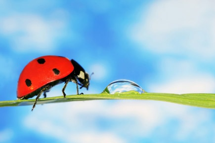
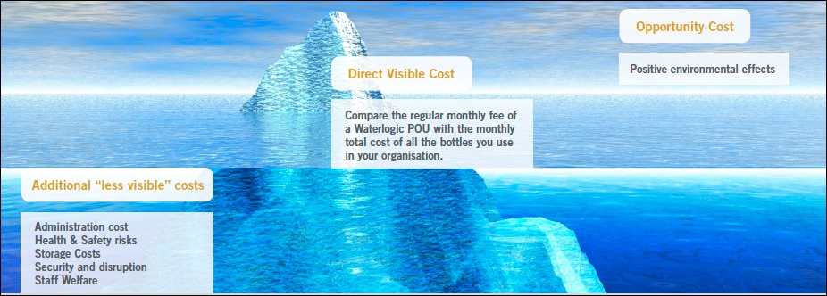

The Facts - Bottled Water
- The World Wildlife Foundation estimates that 1.5 million tons of plastic are used globally each year for water bottles
- According to the Earth Policy Institute 1.5 million barrels of oil are required to make plastic bottles per year, enough to fuel 1,000 cars for a year
- According to the United Nations Food and Agriculture Organisation (FAO), bottled waters do not have any greater nutritive value than tap water
- Delivering bottled water from far away places burn fossil fuels and results in the release of thousands of tons of harmful emissions; 22 million tons of bottled liquid is transferred each year from their country of origin, transported by boat, train, air and ground transport
- Bottled water that is shipped and/or stored cold requires additional electricity
- Large amounts of energy are used in water bottling plants throughout the US and the world
- Energy is required to remove the empty bottles in the form of recycling or trash
- Bottled water may be no safer, or healthier than tap water in many countries while selling for up to 1000 times the price
- Typically 90 % or more of the cost paid by bottled water consumers goes to things other than the water itself -- bottling, packaging, shipping, marketing, retailing, other expenses, and profit
- According to the Climate Action Network, when some plastic bottles are incinerated along with other trash, as is the practice in many municipalities, toxic chlorine (and potentially dioxin) is released into the air while heavy metals deposit in the ash7The Container Recycling Institute (CRI) estimates that supplying the US bottled water market for 1 year consumes more than 1.5 million barrels of oil, which is enough to generate electricity for more than 250,000 homes or enough to fuel 100,000 cars for an entire year
- The CRI estimates that 90% of plastic water bottles end up as either garbage or litter
- Plastic accounts for 25% of the total volume of material sent to landfills every year and plastic water bottles can take as long as 1,000 years to biodegrade10. Plastics are the fastest growing sector in the waste stream and currently take up 25 percent of the volume of materials s ent to landfills each year
- Tap water is distributed through an energyefficient infrastructure
- Approximately 40 percent of bottled water begins as tap water
- Less than 5 percent of plastic waste is recycled each year
Become Part of the Bottleless Water Movement
- There are numerous environmental groups, individual consumers, businesses, and local governments joining the movement toward bottleless water, for more information see:
- Think Outside the Bottle - http://www.thinkoutsidethebottle.org/tob/
- Drink Tap - http://www.drinktap.org
- Take Back the Tap - http://www.democracyinaction.org/dia/organizationsORG/fwwatch/petition.jsp?petition_KEY=569
- UNICEF ’s Tap Project - http://www.tapproject.org/
- Inside the Bottle - http://www.insidethebottle.org/
- Refill Not Landfill - http://www.refillnotlandfill.org/
Simply Save - Cost Savings
- Save Money on workplace drinking water - Pay one regular fee, no matter how much water you drink
- Avoid Paying For:
- Producing and recycling bottles (including landfill taxes).
- Energy costs of producing bottled water.
- The administration to plan, forecast and order all your workplace water.
- Storage of empty and full (spare) bottles
- Administration and disruption caused by repeated bottle deliveries and complicated invoices.
- Health/safety risks of lifting bottles & drinking water that has not been filtered/purified at the point of use.
- DO NOT Pay “double” for your water - Use the water supply to your building, why pay extra to have water trucked in?
Cost Saving - The Fact
- Replacing bottled water with POU units significantly reduces total cost of drinking to your organisation.
- Our products are by nature a cost saving and environmentally friendly technology replacing bottled water and promoting a positive effect on the workplace:
Company & The Environment
Replacing bottled water with POU units significantly reduces negative impact on the environment.
- Our products are by nature a disruptive technology replacing bottled water and promoting a positive effect on the environment:
- Reducing fuel consumption resulting in CO2 emissions and traffic congestion caused by delivery trucks on the road moving bottles.
- Eliminating wasted plastics from bottles, which can only be re-used 4-5 times.
- Eliminating detergent use for bottle cleaning.